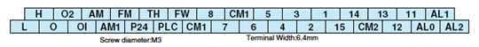
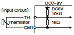

Terminal Arrangement

Terminal Description
| Symbol | Name | Explanation of Terminals | Ratings | |||
|---|---|---|---|---|---|---|
| Analog | Power Supply | L | Common Terminal for Analog Power Source |
Common terminal for H, O, O2, OI, AM, and AMI. Do not ground. | — | |
| H | Power Source for Frequency Setting |
Power supply for frequency command input | DC 10V, 20mA max. | |||
| Frequency Setting | O | Frequency Command Terminal | Maximum frequency is attained at DC 10V in DC 0-10V range. Set the voltage at A014 to command maximum frequency below DC 10V. |
Input impedance: 10kΩ, Allowable input voltage range: DC -0.3-+12V |
||
| O2 | Frequency Command Extra Terminal |
O2 signal is added to the frequency command of O or OI in DC 0-±10V range. By changing configuration, frequency command can be input also at O2 terminal. |
Input impedance:10kΩ, Allowable input voltage range: DC 0-±12V |
|||
| OI | Frequency Command Terminal | Maximum frequency is attained at DC 20mA in DC 4-20mA range. When the intelligent terminal configured as AT is on, OI signal is enabled. |
Input impedance: 100Ω, Allowable input voltage range: DC 0-24mA |
|||
| Monitor Output | AM | Analog Output Monitor (Voltage) | Selection of one function from: Output frequency, output current, torque, output voltage, input power, electronic thermal load ratio, and LAD frequency. |
DC 0-10V, 2mA max. | ||
| AMI | Analog Output Monitor (Current) | DC 4-20mA, 250Ω max. | ||||
| Digital | Monitor Output | FM | Digital Monitor (Voltage) | [DC0-10V output (PWM output)] Selection of one function from: Output frequency, output current, torque, output voltage, input power, electronic thermal load ratio, and LAD frequency. [Digital pulse output (Pulse voltage DC 0/10V)] Outputs the value of output frequency as digital pulse (duty 50%) |
Digital output frequency range: 0-3.6kHz, 1.2mA max. |
|
| Power Supply | P24 | Power Terminal for Interface | Internal power supply for input terminals. In the case of source type logic, common terminal for contact input terminals. |
DC 24V, 100mA max. | ||
| CM1 | Common Terminal for Interface | Common terminal for P24, TH, and FM. In the case of sink type logic, common terminal for contact input terminals. Do not ground. |
— | |||
| Contact Input |
Run Command |
FW | Forward Command Input | The motor runs forward when FW terminal is ON, and stops when FW is OFF. |
[Input ON condition] Voltage between each terminal and PLC: DC 18V min. [Input OFF condition] Voltage between each terminal and PLC: DC 3V max. Input impedance between each terminal and PLC: 4.7Ω Allowable maximum voltage between each terminal and PLC: DC 27V |
|
| Functions | 1 2 3 4 5 6 7 8 |
Intelligent Input Terminals | Assign 8 functions to terminals. (Refer to the standard specifications for the functions. |
|||
| Common Terminal |
PLC | Common Terminal for Intelligent Input Terminals, Common Terminal for External Power Supply for PLCs, etc. |
Select sink or source logic with the short-circuit bar on the control terminals. Sink logic: Short P24 to PLC / Source logic: Short CM1 to PLC. When applying external power source, remove the short-circuit bar and connect PLC terminal to the external device. |
|||
| Open Collector Output |
State | 11 12 13 14 15 |
Intelligent Output Terminals | Assign 5 functions to open collector outputs. When the alarm code is selected at C062, terminal 11-13 or 11-14 are reserved for error codes of inverter trip. (Refer to the standard specifications for the functions.) Both sink and source logic are always applicable between each terminal and CM1. |
Decrease in voltage between each terminal and CM2: 4V max. during ON Allowable maximum voltage: DC 27V Allowable maximum current: 50mA |
|
| CM2 | Common Terminal for Intelligent Output Terminals |
Common terminal for intelligent output terminal 11-15. | ||||
| Analog | Analog Input |
Sensor | TH | Thermistor Input Terminals | The inverter trips when the external thermistor detects abnormal temperature. Common terminal is CM1. [Recommended thermistor characteristics] Allowable rated power: 100mW or over. Impedance in the case of abnormal temperature: 3kΩ Note: Thermal protection level can be set between 0 and 9999Ω. |
Allowable input voltage range  |
| Digital | Relay Output |
State/ Alarm |
AL0 AL1 AL2 |
Alarm Output Terminals | In default setting, an alarm is activated when inverter output is turned off by a protective function. |
Maximum capacity of relays AL1-AL0: AC 250V, 2A(R load)/0.2A(L load) DC 30V, 8A(R load)/0.6A(L load) AL2-AL0: AC 250V, 1A(R load)/0.2A(L load) DC 30V, 1A(R load)/0.2A(L load) Minimum capacity of relays AL1-AL0, AL2-AL0: AC100V, 10mA DC5V, 100mA |